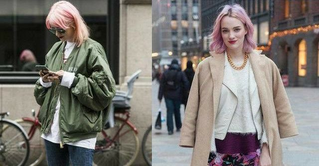
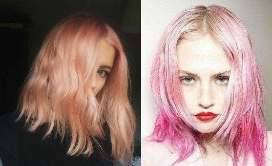
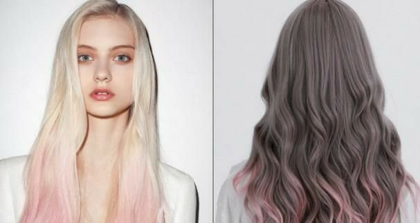

导读：想更亮眼？那就换一款混血发色吧，谁不想拥有这样的发色呢？ 人群中一眼就能发现。染了这样的颜色当然需要好看的发型来支撑， 今天教你暮色头发如何做出混血发型。
暮色短发: 看起来干净利落，更有质感,有时间， 可以卷出自己喜欢的波浪，看起来慵懒迷人， 是小仙女们最好的选择。
暮色波浪发： 中长发的女生就可以选择这款啦！暮色配上大波浪， 尽显女人魅力，把女性的美一五一十的展现出来。 走在街上吸引目光。
片染: 头发不喜欢染太显眼又想要有点变化的女生，也不要担心， 可以选择片染的方式，染一小撮藏在头发里，撩头发的时 候若隐若现，唯美又神秘，凸显气质，是保守女生的首选！ 小小的发色改变，可能就会让你变为另一个人，偶尔尝试 跟平常不一样的风格也是不错的选择！
